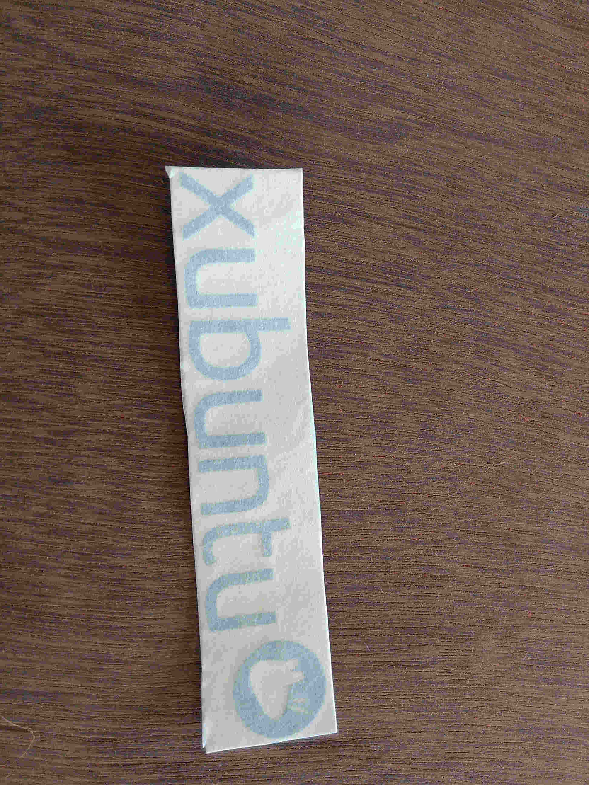
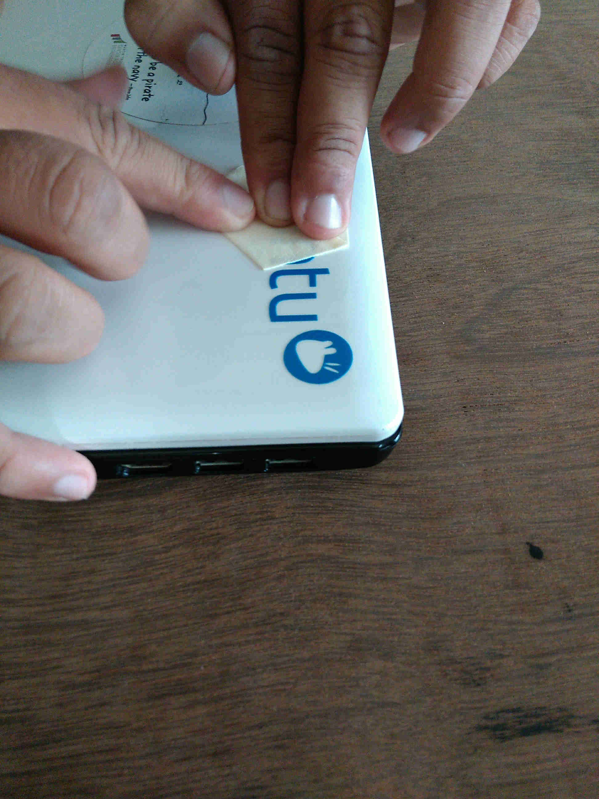

Main agenda of week 2 is to learn to use all the machines, each a day. Today it is Vinyl Cutter.
Using CUPS we created a new profile for the vinyl cutter. Care has to be taken while naming the device, it should be “vinyl” and it is case sensitive. Give the following specifications while forming the printer profile
- Make: RAW
- Model: RAW
Then each of us made a design for cutting. I chose to cut out a laptop sticker of Xubuntu, the OS I use. Then we were taught how to form a sticker properly and the steps to be followed.
 The sticker which i made
 Sticking it on to my computer lid